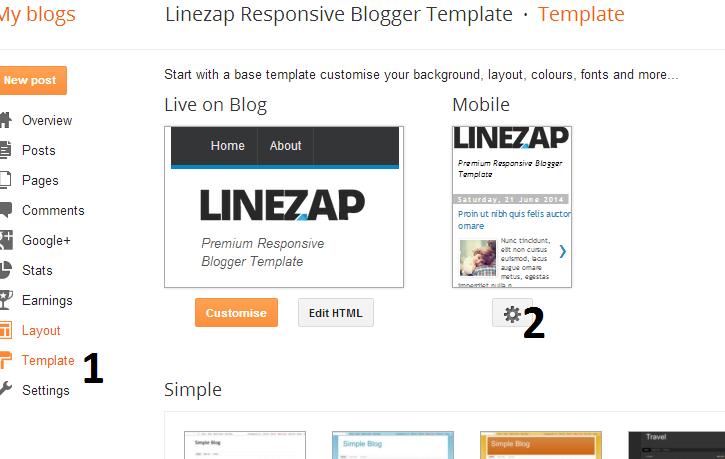
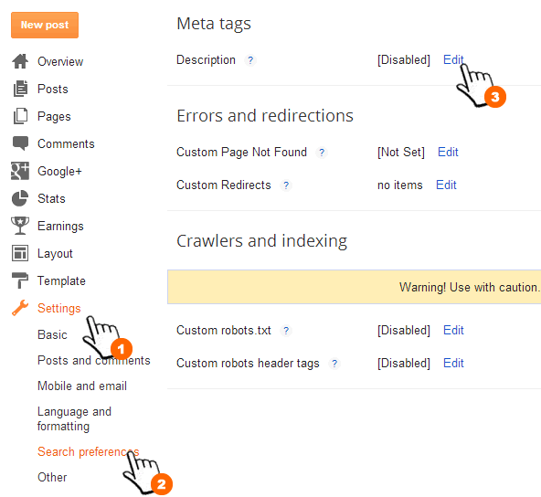

“Sora Article Blogger Template” Documentation by “SoraTemplates” v1.0
Created: 04/02/2015
By: SoraTemplates
soratemplate@gmail.com
Thank you for Downloading my theme. If you have any questions that are beyond the scope of this help file, please feel free to email via my user page contact form. Thanks so much!
Table of Contents
- Installation
- Add Social Links
- Upload Logo
- Setting up the menu
- Work with home design ( SLIDER )
- Enable Mobile Template
- Enable Full Feed
- Enable Search Preference
- Author Description
- Installation - top
- Upload Logo- top
- Add Social Links - top To Edit Main Menu in this theme you can follow this step:
- On Blogger Dashbord Click Layout
- Click on sidebar add gadgetadd HTML/javascript widget
- Now paste the below mention code and save it. :
<a class="social-shortcode" href="#"><img border="0" src="http://4.bp.blogspot.com/-6xR5SlyKowA/U9yVu5f6_YI/AAAAAAAABaE/HF8dem6Q_2s/s1600/facebook.png" style="opacity: 1;"> </a> <a class="social-shortcode" href="#"><img border="0" src="http://2.bp.blogspot.com/-Dc8ZZ8BbfUk/U9yVu1y1cnI/AAAAAAAABaI/4CiHqVRA8E0/s1600/instagram.png" style="opacity: 1;"></a> <a class="social-shortcode" href="#"><img border="0" src="http://1.bp.blogspot.com/-ghkoG-4upBQ/U9yVvxspHtI/AAAAAAAABaQ/JdzfAu8QQ94/s1600/twitter.png" style="opacity: 1;"></a> <a class="social-shortcode" href="#"><img border="0" src="http://1.bp.blogspot.com/-2KdBFeU5f0s/U9yVwDu-5MI/AAAAAAAABaY/mgilLMsS8jE/s1600/youtube2.png" style="opacity: 1;"></a>
- Change # with yours URL link
- Setting up the menu - top To Edit Main Menu in this theme you can follow this step:
- On Blogger Dashbord Click Template
- Click Edit HTML
- (Top Menu) Scroll down and Find this Code :
<div class='gdlr-navigation-wrapper'><nav class='gdlr-navigation' id='gdlr-main-navigation' role='navigation'><ul class='sf-menu gdlr-main-menu' id='menu-main-menu-1'> <li class='menu-item menu-item-type-post_type gdlr-normal-menu'><a href='/'>Home</a></li> <li class='menu-item menu-item-type-post_type gdlr-normal-menu'><a href='#'>Layout</a></li> <li class='menu-item menu-item-type-post_type gdlr-normal-menu'><a href='#'>Shortcodes</a></li> <li class='menu-item menu-item-type-post_type gdlr-normal-menu'><a href='#'>Pages</a></li> <li class='menu-item menu-item-type-post_type gdlr-normal-menu'><a href='#'>Contact</a></li> </ul></nav>
- Change # with yours URL link
- Work with home SLIDER - top
- On Blogger Dashbord Click Template
- Click Edit HTML
- (Top Menu) Scroll down and Find this Code :
<div class='master-slider ms-skin-default' id='MS53d5cadc7a9d0'> <div class='ms-slide' data-delay='6' data-fill-mode='fill'> <img alt='' data-src='http://themes.goodlayers2.com/simplearticle/wp-content/uploads/2013/12/9514752555_0374b08302_o.jpg' src='http://themes.goodlayers2.com/simplearticle/wp-content/plugins/masterslider/public/assets/js/blank.gif' title=''/> </div> <div class='ms-slide' data-delay='6' data-fill-mode='fill'> <img alt='' data-src='http://themes.goodlayers2.com/simplearticle/wp-content/uploads/2013/12/11740750174_fba22d99f3_o.jpg' src='http://themes.goodlayers2.com/simplearticle/wp-content/plugins/masterslider/public/assets/js/blank.gif' title=''/> </div> <div class='ms-slide' data-delay='6' data-fill-mode='fill'> <img alt='' data-src='http://themes.goodlayers2.com/simplearticle/wp-content/uploads/2013/12/13412804195_74cd6a1e60_o.jpg' src='http://themes.goodlayers2.com/simplearticle/wp-content/plugins/masterslider/public/assets/js/blank.gif' title=''/> </div>
- Change image urls with yours image URL link
- Enable Mobile Template - top
- Enable Full Feed - top Access Settings menu and choose Other settings. Click drop-down list at Allow Blog Feed option, then choose Full. After that, click Save settings button at the top right corner.
- Enable Search Preference - top To improve your blog SEO, please enable Blogger Search Preferences. Access your Settings menu, choose Search preferences tab and click Edit link on Meta tags section
- Edit Author Info - top
- On Blogger Dashbord Click Template
- Click Edit HTML
- (Top Menu) Scroll down and Find this description :
Morbi leo risus, porta ac consectetur ac, vestibulum at eros. Fusce dapibus, tellus ac cursus commodo, tortor mauris condimentum nibh, ut fermentum massa justo sit amet risus.
- Replace this text with your owns
Now you have Sora Article Blogger Template. You Can Follow This Steps To Upload Your Blogger Template To Blogger Platform. First Login to your Blogger DashBoard by Using Your Google Username And Password from Here.
Then follow these steps:
1. On Blogger Dashboard Click Template.
2. Click Backup/Restore button (Top Right).
3. Click Choose ( Browse..) File button. Find where the “Sora Article-Blogger-Template.xml” file location.
4. Then Click Upload.
Note: Before Uploading This Template Mobile Blogger Template Must Enable to make Blogger Customize Work
Access your blog Layout > click Edit link on Header widget
After you apply mobile version for this template, Advance Editor will be disabled. This is official bug of Blogger. So, please make sure, you used Advance Editor to change all settings you want before do this step.
As default, Blogger will use its own template for you blog on mobile. So if you want to use Sora Article template on mobile devices, please enable it first.Access your Template menu and click on Gear button of Mobile template.
 In Choose mobile template window, check "No. Show desktop template on mobile devices." option, then click Save button.



Next, check Yes option, then type your Blog Description into the text field and click Save changes.

To Edit AUTHOR DESCRIPTION ( post page )in this theme you can follow this step:
Note: image fetch automatically from google+ account
Once again, thank you so much for purchasing this theme. As I said at the beginning, I'd be glad to help you if you have any questions relating to this theme. No guarantees, but I'll do my best to assist.